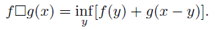
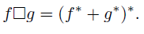

Piecewise linear quadratic (plq), Inf-convolution (via LFT)
plqic = plq_infconv_lft(plqf, plqg)
matrix. A PLQ function.
matrix. A PLQ function.
matrix. The PLQ function that is the inf-convolution of plqf and plqg.
Computes the infimal convolution (or epi-addition) of two convex PLQ functions. The inf-convolution is defined by the formula

When f and g are convex (and proper, lower-semicontinuous), we rewrite the inf-convolution in terms of the Legendre-Frenchel conjugate (denoted by *),

This inf-convolution is also a PLQ function. This algorithm runs in O(n + m) time, where n and m are the size of f and g, respectively.
plqf = [-1,0,-1,0; 1,0,0,1; inf,0,1,0]; plqg = [inf,1,2,1]; plqic = plq_infconv_lft(plqf, plqg), plq_plotMultiple(-4, 3, plqf, plqg, plqic); title("PLQ Convex Inf-convolution"); |
Bryan Gardiner, University of British Columbia, BC, Canada